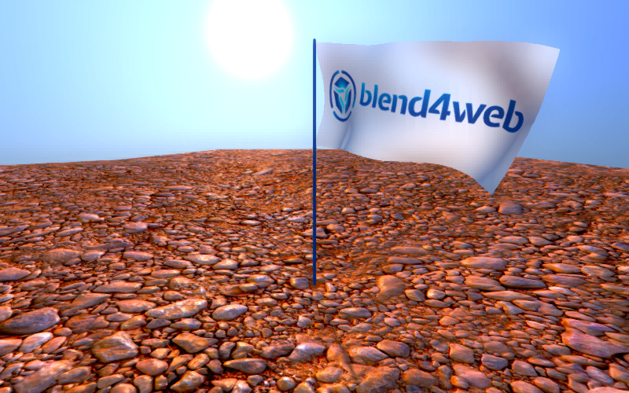
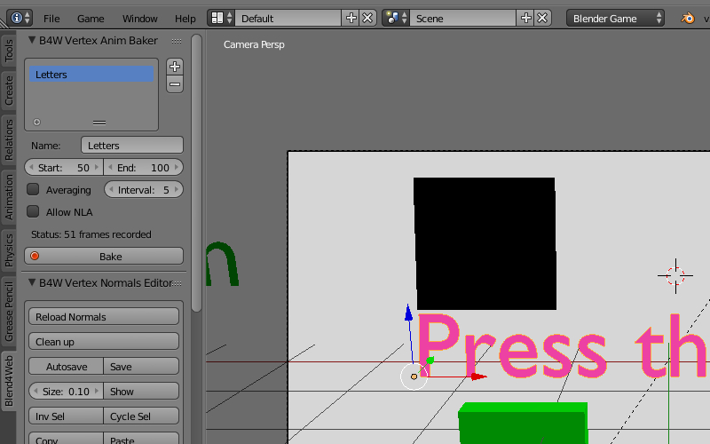

Анимация¶
В общем случае, к анимации относятся изменения параметров объектов во времени. Движком поддерживаются следующие типы анимации:
- Объектная анимация. Заключается в перемещении объекта в пространстве как единого целого.
- Скелетная анимация, то есть деформация геометрии объекта с помощью системы костей (скиннинг). Сюда же относится анимация костей в арматурном объекте с целью прикрепления объектов к костям.
- Вертексная анимация. Заключается в покадровой записи деформаций объекта с их последующим воспроизведением.
- Параметризация источников звука. Изменяемые параметры: громкость (Volume) и высота звука (Pitch).
- Анимация выходного значения ноды Value в нодовом материале.
- Процедурная анимация в виде колебаний объекта под действием ветра. Описано отдельно.
- Эмиссия частиц из источника. Описано в соответствующем разделе.
Управление анимацией¶
Управление анимацией в движке осуществляется одним из двух способов:
- Автоматически, с помощью указания свойств Animation: Use default и Animation: Behavior в свойствах объекта. В данном случае будет осуществлён поиск доступного метода и в случае положительного результата, объект анимируется с момента загрузки сцены. В случае скелетной анимации, по умолчанию воспроизводится актор, назначенный на объекте в окне Action Editor.
- Программно, используя функции модуля движка animation.
Для отладки анимации имеет смысл использовать интерфейс Animation программы-просмотрщика, рассмотренный в соответствующем разделе.
Объектная анимация¶
Изменяемые параметры: координаты центра (Location), поворот (Rotation) и масштабирование (Scale).

Осуществляется с помощью добавления ключей анимации для движения объекта в программе Blender и их последующего воспроизведения в движке.
Поддерживаются следующие типы ключей:
- Location
- Rotation – необходимо осуществлять в режиме Quaternion(WXYZ) либо XYZ Euler.
- Scale – для получения корректных результатов, фактор масштабирования должен быть одинаковым вдоль любых из осей.
- LocRot – комбинация Location и Rotation.
- LocScale – комбинация Location и Scale.
- LocRotScale – комбинация Location, Rotation и Scale.
- RotScale – комбинация Rotation и Scale.
В случае анимации объекта-меша, необходимо назначение свойства Force Dynamic Object на вкладке свойств объекта.
Скиннинг и скелетная анимация¶

Для осуществления скелетной анимации, кроме деформируемого объекта-меша требуется объект-арматура. Осуществляется в четыре этапа:
- Создание скелета объекта в арматурном объекте.
- Назначение вертексных групп в объекте-меше и их привязка к костям. Может быть осуществлено, например, методом “раскраски” весов (weight painting).
- Анимация костей в арматурном объекте. Используются те же ключи, что и в случае объектной анимации.
- В случае нетривиальных видов скелетной анимации, включающих инверсную кинематику, требуется стадия запекания анимационных акторов (блок Action в Blender). Запекание производится с помощью интерфейса B4W Animation Bake, расположенного на панели инструментов Blend4Web:

Запекание производится при выделенном арматурном объекте. Элементы интерфейса B4W Animation Bake:
- Clean keyframes – произвести оптимизацию ключей анимации после запекания. В случае получения некорректных результатов, рекомендуется отключить опцию.
- окно со списком запекаемых акторов – запекать только те акторы, которые указаны в списке, иначе запекать все возможные акторы.
- Name – имя текущего актора из списка запекаемых акторов.
- Bake – произвести запекание. В случае успешного окончания процесса, на сцене появляются акторы с именами вида ИМЯ_B4W_BAKED. Данные акторы будут автоматически назначены на арматурном объекте и воспроизведены в движке. Стоит отметить, что работа подобных акторов в Blender не гарантируется, хотя в ряде случаев может помочь интерфейс Cons Mute/Cons Unmute.
- Cons Mute/Cons Unmute – отключить/активировать ограничители, установленные на костях. Инструмент может быть использован для тестирования запечёных акторов.
Примечание
Движок поддерживает не более 4-х вертексных групп на каждом из вертексов, эти группы отбираются по величине влияния или “веса” вертекса. В процессе загрузки исходного файла со сценой “веса” вертексов проходят через процедуру нормализации, т.е. их сумма приводится в единице.
Для удаления вертексных групп, которые не используются арматурой, можно воспользоваться кнопкой Remove Unused VGroups, которая расположена в интерфейсе B4W Vertex Group.

Вертексная анимация¶
{kind=link}
Позволяет записать любые изменения геометрии объекта-меша. Необходимо учитывать, что каждый кадр вертексной анимации эквивалентен мешу. Не рекомендуется создание длинной анимации для высокополигонального меша, поскольку это может привести к существенному возрастанию размера исходного и экспортируемого файлов, а также замедлить работу движка.
Для запекания вертексной анимации предусмотрен инструмент B4W Vertex Anim Baker, расположенный на панели инструментов Blend4Web.
{kind=link}
Параметризация источников звука¶
На объектах-спикерах дополнительно поддерживаются следующие типы анимационных ключей:
- Volume – громкость звука источника.
- Pitch – высота звука источника.
Параметризация источников звука по своей сути повторяет объектную анимацию.
Анимация ноды Value¶

Работает аналогично объектной анимации. Может быть также использована для создания треков в редакторе нелинейной анимации. Поддерживается несколько анимированных нод Value в одном материале.
См.также